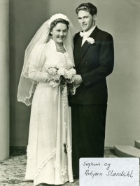
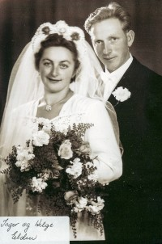

Asbjørn Benjamin Slørdal
M, #54036, f. 27 november 1924, d. 5 juli 2013
Foreldre
Familie: Sigrun Eldbjørg Elden (f. 3 februar 1929, d. 25 oktober 2010)
| Sønn | Bjørn Slørdahl (f. 23 januar 1954) |
| Sønn | Jostein Slørdal+ (f. 1 februar 1960) |

Sigrun Elden og Asbjørn Slørdal
Biografi
Asbjørn Benjamin Slørdal ble født den 27 november 1924 på/i Gulling, Beitstad, Steinkjer, Nord-Trøndelag. Han giftet seg med
Sigrun Eldbjørg Elden den 27 juni 1953. Han døde den 5 juli 2013.
| Sist redigert |
26 mars 2025 00:00:45 |
Ingebrigt Slørdal
M, #54037, f. 8 november 1878, d. 11 oktober 1944
Biografi
| Sist redigert |
4 august 2013 00:00:00 |
Lovise Eriksdatter Lefstad
K, #54038, f. 17 september 1882, d. 6 mai 1969
Biografi
Lovise Eriksdatter Lefstad ble født den 17 september 1882. Hun giftet seg med
Ingebrigt Slørdal. Hun døde den 6 mai 1969.
Lovise Eriksdatter Lefstad was also known as Lovise Slørdahl.
| Sist redigert |
14 august 2009 00:00:00 |
Helge Leif Elden
M, #54049, f. 27 mai 1925, d. 15 november 1995
Foreldre
Familie: Inger Einarsdatter Elden (f. 15 juli 1926, d. 12 september 2016)
| Sønn | Hallbjørn Erling Elden+ (f. 6 juli 1952) |
| Sønn | Odd Terje Elden (f. 30 mai 1954, d. 16 januar 1973) |
| Datter | Bjørg Audhild Elden+ (f. 18 juni 1959) |

Inger og Helge Elden
Biografi
Helge Leif Elden ble født den 27 mai 1925 på/i Namdalseid, Nord-Trøndelag. Han giftet seg med
Inger Einarsdatter Elden i 1951. Han døde den 15 november 1995. Han ble gravlagt på/i Elda kirkegård, Namdalseid, Nord-Trøndelag.
Helge Leif Elden kjøpte i 1952 Elden 138/5, Elden, Namdalseid, Nord-Trøndelag.
| Sist redigert |
17 mars 2025 22:41:14 |
{kind=link}
{kind=link}